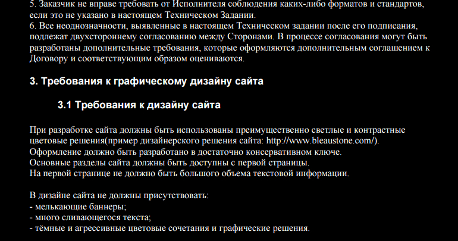
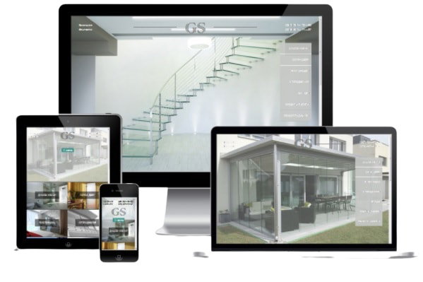

Основные этапы создания сайта
Последовательность создания сайта и четкая проработка этапов – залог успеха всего проекта.
Возможно, не ведающему пользователю может показаться, что разработка сайта – плевое дело.
Ну что здесь сложного – придумал дизайн, сверстал, наполнил его парой-тройкой текстов и готово.
На самом же деле каждый этап создания сайта – это кропотливая работа, за которую ответственен
каждый разработчик из команды веб-студии.
Создание веб-сайта заключает в себе не только разработку дизайна и программинг, как вы могли подумать,
а и детальный анализ проекта, сотрудничество с заказчиком и поиск решений для достижения поставленных целей
проекта. В этой статье мы рассмотрим как происходит поэтапная разработка сайта и детально распишем порядок
создания веб-сайтов.
Основные этапы создания веб-сайта:
- Постановка целей и задач сайта;
- Создание, проработка технического задания (ТЗ) на разработку сайта;
- Прототипирование;
- Создание макета дизайна сайта;
- Верстка;
- Программирование;
- Наполнение контентом;
- Тестирование;
- Сдача готового проекта клиенту.
Постановка целей, задач и выбор вида сайта
Далеко не каждый клиент нашей веб-студии видит различия в видах веб-сайта, способен самостоятельно определить
его цели и задачи. Он обращается к нам с просьбой создать проект. Мы же, в свою очередь,
проводим подготавитальный этап - анализируем для чего клиенту сайт, какие задачи он должен решать:
выполнять функцию представительства компании в Интернете или же продавать товар и услуги, стать качественной
рекламой компании или быть стартапом для молодой фирмы. Все это оговаривается с заказчиком. Он должен сам
понимать зачем ему сайт, в чем он поможет его компании и с чем справиться не сможет.
После того, как поставлены задачи, определяется целевая аудитория. Важно понять для кого создается ресурс, что заказчик может
предложить и как отреагирует аудитория на оффер. Определение ЦА "диктует" свои правила, на основе полученных
данных формируется структура сайта, контент, дизайн, функционал и др. Далее проводится маркетинговый анализ,
в который включен анализ конкурентов, сезонности товара или услуги, деятельности и ниши, конкурентоспособности
предложения. Определяются зацепки и фишки, которые помогут привлечь внимание посетителей. По завершению
разрабатывается прототип сайта и демонстрируется клиенту.
Следующий этап разработки сайта: формирование технического задания
Техническое задание – это документ, который составляется вместе с клиентом.
Он включает детальные характеристики ресурса:
- Пожелания по дизайну (цветовое оформление, применение фирменного стиля или его разработка, соотношение графических элементов к текстовым);
- Семантическое ядро;
- Структуру сайта, количество страниц, категорий, блоков;
- Функционал сайта (только стандартный или разработка дополнительных модулей, подробное их описание и цели);
- Применяемые технологии;
- Технические требования к ресурсу.
Техническое задание – это основа, на которую полагается каждый специалист, участвующий в разработке.
Поэтому в составлении ТЗ участие заказчика – необходимо. Оно оговаривается и редактируется до тех пор,
пока клиент даст согласие и подпишет документ. Только после этого проект переходит в стадию создания.

На этапе формирования и обсуждения ТЗ также разрабатывается структура сайта, его навигация,
количество категорий и подкатегорий, их последовательность размещения и т.д. Вся информация также
включается в документ, который подписывается заказчиком.
Создание макета дизайна сайта
Все этапы создания сайта важны для качественного функционирования ресурса,
но разработка дизайна – один из главных. Ведь дизайн – это то, что видит посетитель в первую очередь,
оценивает его и принимает решение остаться на странице или закрыть вкладку браузера.
Дизайнер основывается на техническом задании, рисует кнопки, баннеры и другие графические элементы.
Другими словами, тот прототип, который был создан на первом этапе разработки сайта, получает эстетичный
внешний вид, производится в цветах, выбранными заказчиком. Если компания имеет корпоративный стиль,
то дизайн разрабатывается в его соответствии. Или же может сначала разработаться фирменный стиль,
а после - дизайн на его основе.
Важно отметить, что дизайнер рисует дизайн не каждой страницы, а шаблоны нескольких основных,
используя тенденции веб-дизайна. Готовый макет передается клиенту и ожидает своего одобрения.
Если необходимы доработки, дизайнер выполняет их и снова показывает макет заказчику.
Дизайн дорабатывается до тех пор, пока он не будет утвержден.
Слияние дизайна с системой управления сайта (верстка)
Верстальщик с помощью языка HTML переводит готовый дизайн в рабочий проект. Ресурс получает жизнь,
становится динамичным, все кнопки работают. Ресурс становится кроссбраузерным и правильно отображается
во всех существующих интернет-браузерах. На это же этапе создаются стили CSS.
Далее ресурс подключается к системе управления. С ее помощью создаются страницы, категории и подкатегории
проекта, определяется порядок работы вкладки меню, расставляются гиперссылки. Ресурс получает окончательную
структуру, которая будет представлена посетителям. Иногда сайты могут использоваться без CMS (например,
лендинги), поэтому сайт просто верстается на HTML и CSS языках без прикрутки к движку. На этом же этапе
верстаются категории и подкатегории, контент, который будет размещен на странице. Большое внимание
верстальщик уделяет верстке карточки товара для интернет-магазина, которая должна соответствовать
техническим и пользовательским требованиям.
На завершающем этапе верстки разрабатывается адаптивная версия сайта. Она не обязательна, но рекомендована
клиентам, желающим охватить мобильный трафик.
Программирование веб-сайта

На этапах создания простого сайта (например, одностраничника) в программировании нет необходимости.
Программист подключается к работе, если разрабатывается большой и сложный проект.
Задачей специалиста стоит разработка сложных функций: калькулятора, системы оплаты с помощью банковских карт,
конвертер валюты, то есть всех тех функций, которые не входят в стандартный пакет функционала.
Наполнение контентом
Предпоследний этап создания веб-сайта – наполнение страниц графическим и информационным контентом.
Размещается видео, фото, тексты и другая информация, которую сможет увидеть или прочитать посетитель.
На основе семантического ядра пишутся SEO-статьи (если предполагается продвижение ресурса СЕО-методом),
контент-менеджер размещает графические элементы в логической структуре. Страницы проходят внутреннюю
оптимизацию.
Тестирование проекта
Важнейшую роль в процессе создания сайта играет его тестинг. Выполняет работу тестировщик,
который мониторит функциональность ресурса по ряду критериев и выявляет ошибки, которые должны быть
устранены. Мы не вынесли выбор домена и хостинга, как отдельный этап. Он необходим, но может проводиться
в любой момент процесса создания ресурса. По завершению работы готовый проект передается заказчику вместе
с логинами и паролями к системе управления. После сдачи проекта клиент может заказать услугу продвижения
и поддержки проекта, оплатив их стоимость.
Дополнительные работы после сдачи проекта заказчику
Редко после того, как пароли и доступ к сайту выданы заказчику, сотрудничество с исполнителем заканчивается.
Чаще всего клиенты заказывают дополнительные услуги, например:
- Обновление каталога, материалов, выкладка товаров и их описание;
- Обучение работе с сайтом;
- Поддержка сайта;
- Продвижение ресурса;
- Написание статей, наполнение категорий СЕО-текстами и др.
Важно отметить, что вся поэтапное создание сайта контролируется заказчиком. По окончанию каждого этапа
готовый результат демонстрируется клиенту и согласовывается с ним. Это помогает заказчику контролировать
работу исполнителя, а исполнителю понимать доволен ли клиент результатами его работы.
Выводы
Как видите, создание сайта является довольно сложной работой. От каждого этапа и безошибочной
его реализации зависит качество всего ресурса, соотношение желаемого к реальному, впечатление клиента
о веб-студии и дальнейшее сотрудничество.